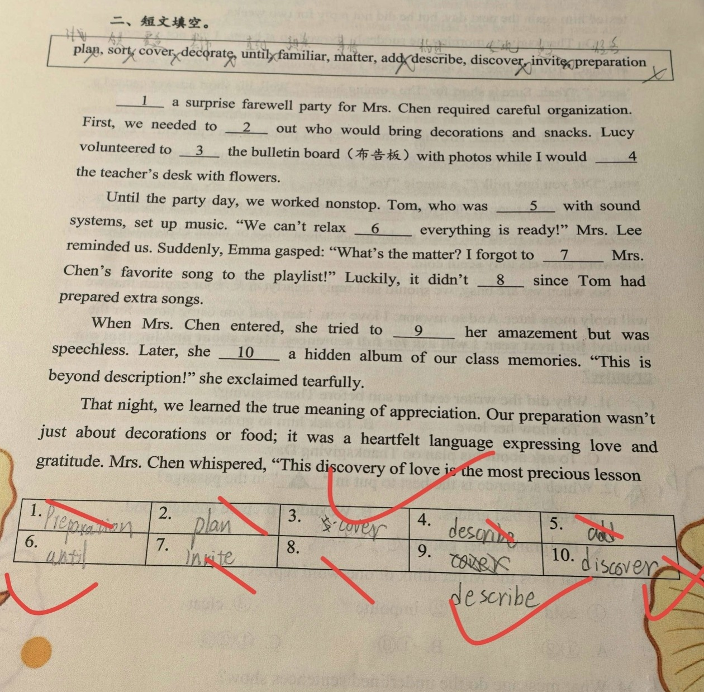

① 备选词 12 个：plan, sort, cover, decorate, until, familiar, matter, add, describe, discover, invite, preparation； ② 短文共 10 个空（讲同学们为陈老师筹办惊喜告别派对）； ③ 每词限用一次，有 2 个多余词； ④ 部分空需要改变词形（时态 / 动名词）。
从方框中选词并用正确形式填入 10 个空，使短文通顺完整。
① 先通读全文抓大意：策划派对 → 分工准备 → 当天小插曲 → 老师的反应 → 感悟。 ② 每个空先判“词性”，再判“固定搭配”，最后查“词形”： 1) 空 1 是句子主语，需要名词/动名词 ⇒ plan → 「Planning」； 2) 空 2：sort out（挑出、分配）固定搭配 ⇒ 「sort」； 3) 空 3：cover ... with ...（用…覆盖）⇒ 「cover」； 4) 空 4：decorate ... with ...（用…装饰）⇒ 「decorate」； 5) 空 5：be familiar with（熟悉）⇒ 「familiar」； 6) 空 6：not ... until（直到…才）⇒ 「until」； 7) 空 7：add ... to ...（把…加入）⇒ 「add」； 8) 空 8：it doesn't matter（没关系/不要紧）⇒ 「matter」； 9) 空 9：describe her amazement（描述她的惊讶）⇒ 「describe」； 10) 空 10：Later, she ___ ⇒ 叙述过去，用过去式 ⇒ 「discovered」。 ③ 最后检查：10 个空各用一个词，未使用的两个（invite、preparation）正好是干扰项。
① 只按“词义”选词，忽略「固定搭配」——本题几乎每空都靠搭配定位（sort out / be familiar with / add ... to / cover ... with / decorate ... with）； ② 「词形不变化」：空 1 需要动名词 Planning（不是 Preparation/Plan），空 10 需要过去式 discovered（不是 discover）； ③ 「一个词重复使用」：把 cover 同时填在空 3 和空 9（每词只能用一次）； ④ 误用多余的干扰词：preparation、invite 在本文中没有合适位置； ⑤ 不熟悉 not ... until 结构（“直到…才”）； ⑥ ⚠ 本次作业错得较多：第1、2、4、5、7、8、9、10 空均被红笔改正，对的只有第 3、6 空。
① 高频动词短语：sort out / cover ... with ... / decorate ... with ... / add ... to ... / be familiar with / not ... until； ② 词形变化：动名词作主语（Planning ... required）；一般过去时（discovered）； ③ 词义辨析：matter（要紧、有影响）vs. describe（描述）vs. discover（发现）vs. decorate（装饰）； ④ 解题策略：先定词性 → 再定搭配 → 最后查词形；用“每词限用一次 + 多余词”反推。